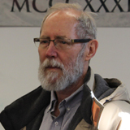
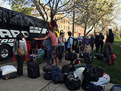
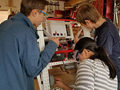

Joel Noble -- The coach and co-founder of our team. He is a woodshop and engineering teacher here at East High School. He helps us with financial management and overall guidance of the team to lead us in the correct direction. He encourages us to solve problems on our own, but is ready to step in to help at any time.
Chad Bartel -- Chad is a mentor who works with ULA (United Launch Alliance) which is based in Colorado. He helps predominantly with programming but sometimes helps our design, mechanical, and electrical subteams. He is extremely supportive and passionate.

Doc Cod -- Co-founder of the team, who has remained a mentor since 2003. Doc Cod has helped the team especially it its off-seasons by educating team members through side-projects. He is currently our VEX team captain though he consistently supports the rest of the team as well.
Dave Howard -- Dave is a team parent and employee of our school district. He helps manufacturing, mechanical, and electrical subteams. He encourages us to learn as much as we can and teach each other in the process.
Subteams

Business is responsible for ensuring that we have the proper funds to enable us to compete, travel and construct our robots. We talk with local businesses to ask for sponsorship so our team can learn and develop the necessary skills to be successful. We also contact nearby schools to show elementary or middle school kids that robotics is a fun and meaningful activity they should consider for high school.
The drive and strategy team is responsible for determining how we can most effectively compete every year. We share our ideas with mechanical and design as they develop our robot's design, and then after our robot is constructed, we spend much of our time learning how best to drive and operate our robot.
Another part of our drive team is dedicated to scouting, which takes notes on other teams at competition to aid in our development of match-by match strategy based off of opponent's capabilities.
Electrical is responsible for making sure that everything that has been constructed is wired so that it can receive power. On certain robots, we are also responsible for pneumatics systems which provide an additional way for the mechanisms of our robot to move. We use wires, components, and routing, to enable the programming team to reach and communicate with the mechanical parts of our robot. We meticulously plan and design the layout and material of various components, as there is often limited space for an electrical board. Finally, the electrical board is attached to the robot and any other components are wired before programming can begin constructing code for it.
Manufacturing takes the CAD which mechanical and design creates and begins fabricating parts to construct the robot. We create the rails for the drive base as well as the gussets and rivets to connect them together. Once our drive base is constructed, we manufacture anything needed for the other mechanisms of our robot, be a shooting mechanism, climbing mechanism, or anything else the game calls for. Once the basics are created, we pass our robot on to electrical so it can be wired.

Mechanical and design is responsible for the final design of the robot, and the knowledge of how to fix or modify our robot's mechanisms. We function primarily as a design team towards the beginning of the season, where we use Computer-Aided Design (CAD), which utilizes computer systems to aid in the creation, modification, analysis, and optimization of a design. We build prototypes of robots, then we test and modify the design based on the success of the prototypes. Once the design is finalized, we send the CAD design on to the manufacturing team for production.
Presence focuses on integrating the image of the team into everything that robotics does. We establish the “presence” of the entire team, either by coordinating community outreach, or creating a common theme that our other groups design too. We design everything from t-shirts to our pit The imagery is the focus of this group, and our main goal is to unite the team, as well as branch out to different communities around our high school.
Programming is responsible for wrting code to contact all the electronic components on board the robot. We work on robot movement, vision tracking, and LED displays. By using complex calculus algorithms (such as PID), we are able to write code that automates how our robot moves relative to its sensor input. Vision tracking uses a camera on the front of our robot to help “see” elements from anywhere on the field so that our robot can automatically align without the need of precise driver input. The LED displays on our robot are used for both communication between robot and driver, as well as for aesthetic appeal.
Similar to manufacturing, we fabricate parts for our robot. We start with a file of the 3D object that we need for our design. Then, we choose between using a LulzBot for ABS filament or using a Makerbot for PLA filament. The 3D printing process enables us to produce anything we need for our robot on a case by base basis.